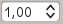

ジオメトリとトポロジは、GIS の重要な概念です。
ジオメトリは、地物の形状と位置を定義し、トポロジは、地物間の空間関係を定義します。
詳細は、ベクタの章を参照してください。
QGIS には、ジオメトリとトポロジのエラーを検出および修正するための組み込みツールとプラグインが含まれています。このセクションでは、これらのツールとプラグインの使用方法について説明します。
9.3.1. ジオメトリをチェック
Geometry Checker is a powerful core plugin to check and fix the geometry
validity of a layer. It is available from the
menu ( ).
).
9.3.1.1. Configuring the checks
The Check Geometries dialog shows different grouped settings in the
first tab (Setup):
Input vector layers: to select the layers to check. A  Only selected features checkbox can be used to restrict the
checking to the geometries of the selected features.
Only selected features checkbox can be used to restrict the
checking to the geometries of the selected features.
Allowed geometry types gives the chance to restrict the geometry
type of the input layer(s) to:
Point
Multipoint
Line
Multiline
Polygon
Multipolygon
Geometry validity. Depending on geometry types you can choose
between:
Geometry properties. Depending on geometry types, different
options are available:
Polygons and multipolygons may not contain any holes
Multipart objects must consist of more than one part
Lines must not have dangles
Geometry conditions. Allows you to add some condition to validate
the geometries with:
Minimal segment length (map units) 
Minimum angle between segment (deg)
Minimal polygon area (map units sqr.)
No sliver polygons with a Maximum thinness
and a Max. area (map units sqr.)
Topology checks. Depending on geometry types, many different
options are available:
Checks for duplicates
Checks for features within other features
Checks for overlaps smaller than
Checks for gaps smaller than
Points must be covered by lines
Points must properly lie inside a polygon
Lines must not intersect any other lines
Lines must not intersect with features of layer

Polygons must follow boundaries of layer
Tolerance. You can define the tolerance of the check in map layer
units.
Output vector layer gives the choice to:
 Modify input layer
Modify input layer
Create new layers
When you are happy with the configuration, you can click on the Run
button.

Fig. 9.4 The Geometry Checker Plugin
The Geometry Checker Plugin can find the following errors:
Self intersections: a polygon with a self intersection
Duplicate nodes: two duplicates nodes in a segment
Holes: hole in a polygon
Segment length: a segment length lower than a threshold
Minimum angle: two segments with an angle lower than a threshold
Minimum area: polygon area lower than a threshold
Silver polygon: this error come from very small polygon (with small area) with
a large perimeter
Duplicates features
Feature within feature
Overlaps: polygon overlapping
Gaps: gaps between polygons
The following figure shows the different checks made by the plugin.

Fig. 9.5 Some checks supported by the plugin
9.3.1.2. Analysing the results
The results appear in the second tab (Result) and as an overview
layer of the errors in the canvas (its name has the default prefix
checked_).
A table lists the Geometry check result with one error per row and
columns containing: the layer name, an ID, the error type, then the coordinates
of the error, a value (depending on the type of the error) and finally the
resolution column which indicates the resolution of the error.
At the bottom of this table, you can Export the error into different file
formats. You also have a counter with the number of total errors and fixed ones.
You can select a row to see the location of the error. You can change this
behavior by selecting another action between Error
(default),  Feature,
Don’t move, and Highlight selected features.
Feature,
Don’t move, and Highlight selected features.
Below the zoom action when clicking on the table row, you can:
 Show selected features in attribute table
Show selected features in attribute table
 Fix selected errors using default resolution
Fix selected errors using default resolution
Fix selected errors, prompt for resolution method
You will see a window to choose the resolution’s method among which:
Merge with neighboring polygon with longest shared edge
Merge with neighboring polygon with largest area
Merge with neighboring polygon with identical attribute value, if any, or
leave as is
Delete feature
No action
 Error resolution settings allows you to change the
default resolution method depending on the error type
Error resolution settings allows you to change the
default resolution method depending on the error type
Tip
Fix multiple errors
You can fix multiple errors by selecting more than one row in the table with
the CTRL + click action.
Finally, you can choose which Attribute to use when merging features
by attribute value.
9.3.2. Topology Checker Plugin

Fig. 9.6 The Topology Checker Plugin
Topology describes the relationships between points, lines and polygons that
represent the features of a geographic region. With the Topology Checker plugin,
you can look over your vector files and check the topology with several topology
rules. These rules check with spatial relations whether your features ‘Equal’,
‘Contain’, ‘Cover’, are ‘CoveredBy’, ‘Cross’, are ‘Disjoint’, ‘Intersect’,
‘Overlap’, ‘Touch’ or are ‘Within’ each other. It depends on your individual
questions which topology rules you apply to your vector data (e.g., normally
you won’t accept overshoots in line layers, but if they depict dead-end streets you
won’t remove them from your vector layer).
QGIS has a built-in topological editing feature, which is great for creating
new features without errors. But existing data errors and user-induced errors
are hard to find. This plugin helps you find such errors through a list of rules.
To enable the Topology checker plugin:
Go to Plugins menu
Open |showPluginManager| Manage and Install plugins and choose
|pluginInstalled| Installed
Enable |topologyChecker| Topology checker
Close the Plugin manager dialog.
A |topologyChecker| Topology checker entry is added to the
Vector menu.
After you enabled |topologyChecker| Topology checker
open it and choose Configure to create your topology rules.
On point layers the following rules are available:
Must be covered by: Here you can choose a vector layer from your project.
Points that aren’t covered by the given vector layer occur in the ‘Error’ field.
Must be covered by endpoints of: Here you can choose a line layer from your project.
Must be inside: Here you can choose a polygon layer from your project.
The points must be inside a polygon. Otherwise, QGIS writes an ‘Error’ for the point.
Must not have duplicates: Whenever a point is represented twice or more,
it will occur in the ‘Error’ field.
Must not have invalid geometries: Checks whether the geometries are valid.
Must not have multi-part-geometries: All multi-part points are written
into the ‘Error’ field.
On line layers, the following rules are available:
End points must be covered by: Here you can select a point layer from your project.
Must not have dangles: This will show the overshoots in the line layer.
Must not have duplicates: Whenever a line feature is represented twice or more,
it will occur in the ‘Error’ field.
Must not have invalid geometries: Checks whether the geometries are valid.
Must not have multi-part geometries: Sometimes, a geometry is actually a
collection of simple (single-part) geometries. Such a geometry is called
multi-part geometry. If it contains just one type of simple geometry, we call
it multi-point, multi-linestring or multi-polygon. All multi-part lines are
written into the ‘Error’ field.
Must not have pseudos: A line geometry’s endpoint should be connected to
the endpoints of two other geometries. If the endpoint is connected to only
one other geometry’s endpoint, the endpoint is called a pseudo node.
On polygon layers, the following rules are available:
Must contain: Polygon layer must contain at least one point geometry
from the second layer.
Must not have duplicates: Polygons from the same layer must not have
identical geometries. Whenever a polygon feature is represented twice or more
it will occur in the ‘Error’ field.
Must not have gaps: Adjacent polygons should not form gaps between them.
Administrative boundaries could be mentioned as an example (US state polygons
do not have any gaps between them…).
Must not have invalid geometries: Checks whether the geometries are valid.
Some of the rules that define a valid geometry are:
Polygon rings must close.
Rings that define holes should be inside rings that define exterior boundaries.
Rings may not self-intersect (they may neither touch nor cross one another).
Rings may not touch other rings, except at a point.
Must not have multi-part geometries: Sometimes, a geometry is actually a
collection of simple (single-part) geometries. Such a geometry is called multi-part
geometry. If it contains just one type of simple geometry, we call it multi-point,
multi-linestring or multi-polygon. For example, a country consisting of multiple
islands can be represented as a multi-polygon.
Must not overlap: Adjacent polygons should not share common area.
Must not overlap with: Adjacent polygons from one layer should not share
common area with polygons from another layer.
When you create a New rule click on the |symbologyAdd| Add rule
to include it to the Current rules.
You can enable or disable individual rules by clicking on the checkbox.
Right-clicking over a rule provides the following options:
Select All the rules
Activate or Deactivate the selected rules
Toggle activation of selected rules
Delete selected rules.
This can also be achieved with the |symbologyRemove| Delete selected rules button.
Press OK and then choose from the Topology checker panel:
|validateAll| Validate All: applies the active rules to all the features
of the involved layer(s)
or |validateExtent| Validate Extent: applies the active rules to the features
of the involved layer(s), within the current map canvas.
The button is kept pushed and the results will update as the map canvas extent changes.
Errors will show up in the table of results containing type of error, layer and feature ID.
Use Filter errors by rule menu to filter the errors to a specific error type.
Check Show errors on the canvas to show error location on the canvas.
Clicking a row in the table will zoom the map canvas to the concerned feature,
where you can use QGIS digitizing tools to fix the error.